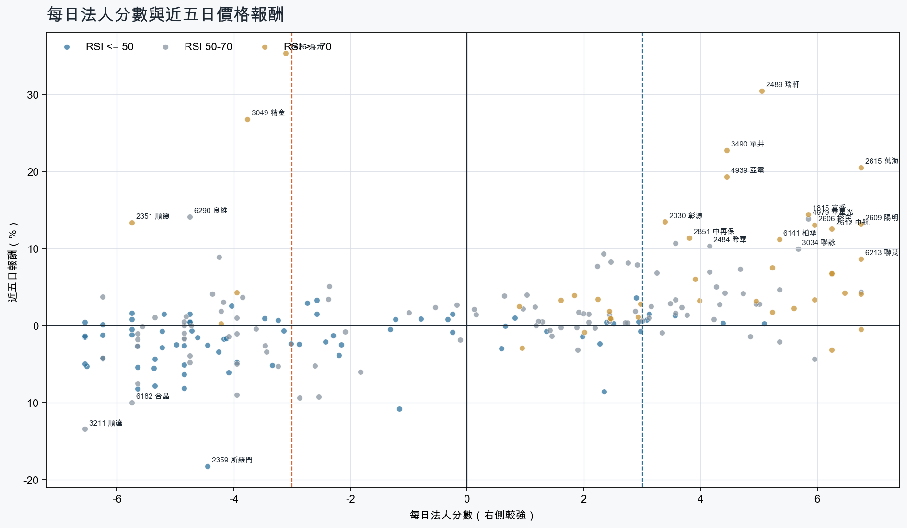
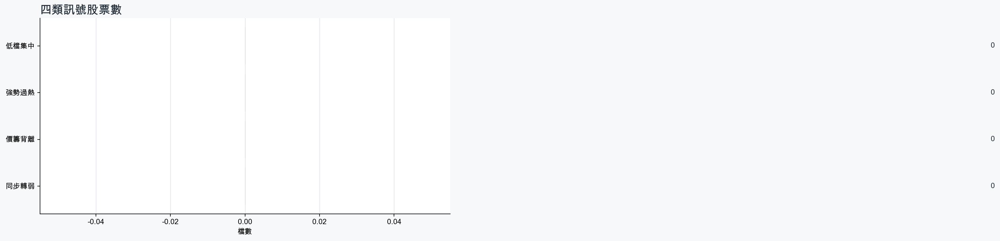
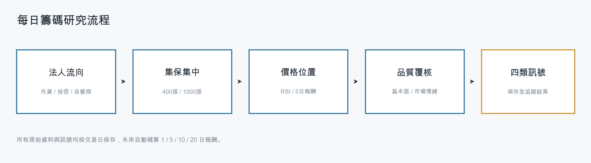
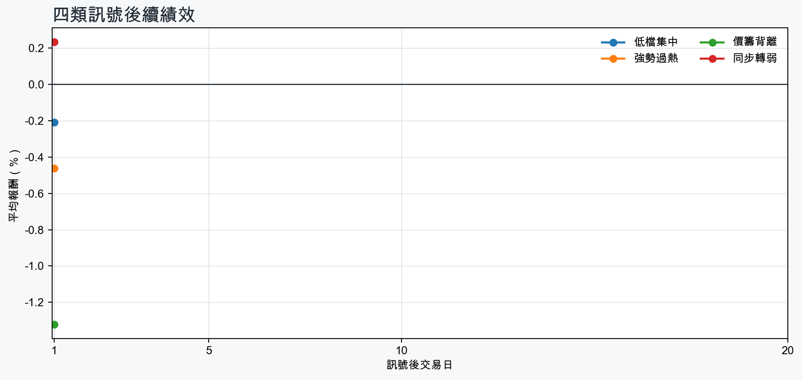

市場情緒中性分歧
近5日法人合計-1,437,842 張
篩選池上漲比例57.7%
籌碼好 / RSI低5 檔
籌碼差 / 價跌10 檔



01
籌碼好 / RSI低
優先研究基本面；法人續買且價格止穩時，才適合分批觀察。
| 股票 / 建議 | 每日法人分 | RSI / 價格 | 每週集保確認 | 基本面 | 近期消息 |
|---|---|---|---|---|---|
| 2618 長榮航優先觀察 | +3.1法人 +27,472 張 / 4 天 | 42.65日 +0.7% | +1.65 pp1000張 +1.55 pp | 單月營收年增 +21.4%；累計營收年增 +17.1%；上半年 EPS 2.24仍需觀察下一期財報延續性 | 長榮航簽約貨代業者AIT 推動綠運輸計畫 - news.cnyes.com長榮航總座：冀SAF供應量再增，助力淨零減排- 新聞 - MoneyDJ |
| 2886 兆豐金優先觀察 | +5.1法人 +86,726 張 / 5 天 | 30.75日 +0.2% | +0.00 pp1000張 -0.01 pp | 單月營收年增 +4.1%；累計營收年增 +16.7%仍需觀察下一期財報延續性 | 未抓到近期標題 |
| 2892 第一金優先觀察 | +4.4法人 +58,735 張 / 5 天 | 30.65日 +0.3% | +0.19 pp1000張 +0.21 pp | 單月營收年增 +2.4%；累計營收年增 +18.6%仍需觀察下一期財報延續性 | 未抓到近期標題 |
| 5876 上海商銀優先觀察 | +3.6法人 +9,987 張 / 5 天 | 46.15日 +1.3% | +0.41 pp1000張 +0.34 pp | 單月營收年增 +19.6%；累計營收年增 +1.3%仍需觀察下一期財報延續性 | 未抓到近期標題 |
| 2646 星宇航空優先觀察 | +3.1法人 +8,834 張 / 5 天 | 45.75日 +1.4% | +0.23 pp1000張 +0.17 pp | 單月營收年增 +42.8%；累計營收年增 +32.0%上半年 EPS -0.11；上半年營益率 1.8% | 百年靈×星宇航空二度聯名！三萬英呎高空揭幕Cosmonaute腕錶，天然隕石面盤每只都不一樣 - ELLE萬呎高空上的星際傳奇：百年靈攜手星宇航空，發表全新聯名計時碼錶 - Prestige Online - Singapore |
02
籌碼好 / RSI高
趨勢強但不追價，等待量縮、RSI降溫或回測支撐。
| 股票 / 建議 | 每日法人分 | RSI / 價格 | 每週集保確認 | 基本面 | 近期消息 |
|---|---|---|---|---|---|
| 6213 聯茂等拉回，不追價 | +6.8法人 +5,791 張 / 5 天 | 86.65日 +8.6% | +6.64 pp1000張 +7.53 pp | 單月營收年增 +96.9%；累計營收年增 +34.7%；上半年 EPS 4.39仍需觀察下一期財報延續性 | 台股45K失而復得！聯茂吃高階CCL漲價潮助攻亮燈 「這檔」上半年賺近2個股本同為焦點 - Yahoo股市昨天殺近6％今直接V漲停！聯茂低階CCL「比高階更缺」 法人喊明年衝5股本 - 旺得富理財網 |
| 1815 富喬等拉回，不追價 | +5.8法人 +49,063 張 / 4 天 | 81.95日 +14.4% | +8.82 pp1000張 +7.89 pp | 單月營收年增 +68.1%；累計營收年增 +46.9%；上半年 EPS 2.24仍需觀察下一期財報延續性 | 加權指數大漲407 點站回45,169 點！台積電重回2,400 元，RS動能排行: 鎖碼瀚荃、聯一光、富喬｜豐雲學堂2026 年 08 月 - sinotrade.com.tw富喬（1815）做什麼？AI玻纖布需求爆發，營收、籌碼與後市一次看｜股市話題｜豐雲學堂2026 年 08 月 - sinotrade.com.tw |
| 2542 興富發等拉回，不追價 | +6.8法人 +27,508 張 / 5 天 | 76.75日 -0.5% | +1.93 pp1000張 +2.14 pp | 單月營收年增 +196.6%；累計營收年增 +404.3%；上半年 EPS 2.45仍需觀察下一期財報延續性 | 未抓到近期標題 |
| 6214 精誠等拉回，不追價 | +5.0法人 +5,060 張 / 3 天 | 77.15日 +3.1% | +5.85 pp1000張 +8.12 pp | 單月營收年增 +31.8%；累計營收年增 +36.2%；上半年 EPS 6.15上半年營益率 4.3% | 精誠攜手伊藤忠CTC成立合資公司 搶啖台商赴日發展新商機 - news.cnyes.com搶台商赴日布局商機精誠攜伊藤忠打造跨境IT服務平台| 產經 - cna.com.tw |
| 6108 競國等拉回，不追價 | +6.2法人 +4,253 張 / 5 天 | 72.45日 -3.2% | +3.41 pp1000張 +4.11 pp | 單月營收年增 +63.2%；累計營收年增 +28.7%；上半年 EPS 0.32上半年營益率 -8.0% | 競國處分資產、訂單全數轉至大陸廠生產 上半年記憶體模組板占比43.1% - UDN |
| 1709 和益等拉回，不追價 | +4.0法人 +4,212 張 / 3 天 | 73.85日 +3.2% | +4.15 pp1000張 +4.16 pp | 單月營收年增 +83.3%；累計營收年增 +14.9%；上半年 EPS 1.30仍需觀察下一期財報延續性 | 未抓到近期標題 |
| 2609 陽明等拉回，不追價 | +6.8法人 +149,881 張 / 5 天 | 89.65日 +13.2% | +4.76 pp1000張 +4.63 pp | 單月營收年增 +34.6%；累計營收年增 +5.8%；上半年 EPS 2.05上半年營益率 7.6% | 陽明交大研發「超穎介面」 提升AR產品色彩表現|新創臺灣 - 僑新聞航運股資金轉移 陽明.長榮翻黑 裕民漲近8% - 非凡新聞台 |
| 2603 長榮等拉回，不追價 | +6.0法人 +50,149 張 / 5 天 | 83.65日 +3.4% | +3.62 pp1000張 +3.50 pp | 單月營收年增 +43.1%；累計營收年增 +4.2%；上半年 EPS 11.24仍需觀察下一期財報延續性 | 【新聞稿】長榮拒絕全面開放空地勤穿運動鞋 工會將於長榮馬拉松「穿皮鞋跑10公里」 - 公民行動影音紀錄資料庫長榮航空「綠運輸計畫」跨產業合作 首年創造1.5萬噸減碳環境效益 - UDN |
| 5607 遠雄港等拉回，不追價 | +5.2法人 +3,037 張 / 5 天 | 74.95日 +1.7% | +1.01 pp1000張 +1.65 pp | 單月營收年增 +38.0%；累計營收年增 +36.7%；上半年 EPS 2.18仍需觀察下一期財報延續性 | AI伺服器暢旺，遠雄港倉儲與物流需求均強- 新聞 - MoneyDJ |
| 2615 萬海等拉回，不追價 | +6.8法人 +45,597 張 / 5 天 | 96.65日 +20.5% | +2.98 pp1000張 +3.15 pp | 單月營收年增 +50.1%；累計營收年增 +12.8%；上半年 EPS 6.84仍需觀察下一期財報延續性 | 航海王又殺瘋了！萬海、慧洋盤中狂衝 法人點名「4個月以上」權證搶行情 - Yahoo股市萬海H1毛利率為貨櫃三雄之冠 主因百分百自有船、亞洲線佔比高 - ETtoday財經雲 |
03
籌碼差 / 股價上漲
可能是事件行情或軋空；沒有籌碼改善前避免追高。
| 股票 / 建議 | 每日法人分 | RSI / 價格 | 每週集保確認 | 基本面 | 近期消息 |
|---|---|---|---|---|---|
| 2426 鼎元背離警戒，避免追高 | -3.1法人 -2,002 張 / 2 天 | 77.65日 +35.3% | +4.75 pp1000張 +4.05 pp | 單月營收年增 +36.3%；累計營收年增 +2.3%；上半年 EPS 0.28上半年營益率 5.8% | 【13:00 即時新聞】鼎元(2426)股價上漲逾5%，光通訊與AI算力題材延燒＋短中期多頭結構獲主力與外資資金支撐 - CMoney投資網誌2426 鼎元 - 看看我有多幸運，11:39最後低點補到，不然就是漲停伺候了，... - 股市爆料同學會 - CMoney |
| 3049 精金背離警戒，避免追高 | -3.8法人 -4,857 張 / 1 天 | 77.85日 +26.8% | +0.22 pp1000張 +0.22 pp | 上半年 EPS 0.51單月營收年增 -70.8%；累計營收年增 -51.6%；上半年營益率 7.3% | 【即時新聞】精金(3049)爆量狂飆逾7%，這「2檔概念股」獲大戶卡位準備接棒！ - CMoney投資網誌【即時新聞】精金(3049)最新爆量2萬張亮燈，主力急卡位小心拉回！ - CMoney投資網誌 |
| 6290 良維背離警戒，避免追高 | -4.8法人 -3,196 張 / 2 天 | 62.95日 +14.1% | -1.86 pp1000張 -2.83 pp | 單月營收年增 +14.4%；累計營收年增 +8.1%；上半年 EPS 4.50仍需觀察下一期財報延續性 | 未抓到近期標題 |
| 2351 順德背離警戒，避免追高 | -5.8法人 -4,497 張 / 0 天 | 81.45日 +13.4% | +0.80 pp1000張 +0.82 pp | 單月營收年增 +54.0%；累計營收年增 +28.5%；上半年 EPS 2.82仍需觀察下一期財報延續性 | 未抓到近期標題 |
| 8086 宏捷科背離警戒，避免追高 | -6.5法人 -9,477 張 / 0 天 | 41.65日 +0.4% | -4.04 pp1000張 -4.67 pp | 單月營收年增 +18.4%；累計營收年增 +40.0%；上半年 EPS 2.93仍需觀察下一期財報延續性 | 穩懋、宏捷科、全新...PA三雄搶攻光通訊與低軌衛星的黃金年代-理財彥究院-台股 - 商周財富網 |
| 3374 精材背離警戒，避免追高 | -4.8法人 -3,463 張 / 2 天 | 49.25日 +1.5% | -7.47 pp1000張 -8.22 pp | 單月營收年增 +31.0%；累計營收年增 +32.6%；上半年 EPS 2.88仍需觀察下一期財報延續性 | 【08/25 申報轉讓】台灣精材(3467)董事馬堅勇之配偶將於08/28申報轉讓台灣精材股票200張 - CMoney |
| 6239 力成背離警戒，避免追高 | -4.2法人 -4,617 張 / 0 天 | 59.75日 +3.0% | -3.68 pp1000張 -2.93 pp | 單月營收年增 +29.4%；累計營收年增 +31.9%；上半年 EPS 5.50仍需觀察下一期財報延續性 | 力成庫藏股新進展 至今買回金額4.19億元 - 經濟日報力成三大引擎加持- 日報 - 工商時報 |
| 3006 晶豪科背離警戒，避免追高 | -4.2法人 -2,537 張 / 1 天 | 61.25日 +8.9% | +5.03 pp1000張 +4.04 pp | 單月營收年增 +491.1%；累計營收年增 +281.5%；上半年 EPS 27.58仍需觀察下一期財報延續性 | 晶豪科：子公司誠風投資取得公司普通股2,292,985股，計約5.7億元 - Yahoo股市【即時新聞】晶豪科(3006)爆量重挫7%，這「2檔概念股」同步遭逢調節賣壓！ - CMoney投資網誌 |
| 2465 麗臺背離警戒，避免追高 | -6.2法人 -3,281 張 / 0 天 | 52.95日 +3.7% | +3.13 pp1000張 -0.16 pp | 單月營收年增 +280.9%；累計營收年增 +176.7%；上半年 EPS 2.79上半年營益率 6.5% | 未抓到近期標題 |
| 3209 全科背離警戒，避免追高 | -5.8法人 -3,232 張 / 0 天 | 24.45日 +1.6% | -2.13 pp1000張 +0.04 pp | 單月營收年增 +47.9%；累計營收年增 +44.9%；上半年 EPS 3.28上半年營益率 3.0% | 3209 全科- 股市最新爆料，掌握股友們對眾個股股價、技術分析、新聞的第一手... - 股市爆料同學會 - CMoney |
04
籌碼差 / 股價下跌
籌碼與價格同弱，原則上迴避，等待法人與大戶同時回補。
| 股票 / 建議 | 每日法人分 | RSI / 價格 | 每週集保確認 | 基本面 | 近期消息 |
|---|---|---|---|---|---|
| 3211 順達迴避，等待籌碼翻正 | -6.5法人 -2,972 張 / 0 天 | 51.55日 -13.5% | -3.15 pp1000張 -2.37 pp | 單月營收年增 +20.9%；累計營收年增 +21.7%；上半年 EPS 3.40仍需觀察下一期財報延續性 | 3211 順達- 明天有戲嗎? - 股市爆料同學會 - CMoneyBBU族群暴衝！順達新盛力閃紅燈...近萬張排隊等買 分析師看法出爐 - Yahoo股市 |
| 6182 合晶迴避，等待籌碼翻正 | -5.8法人 -37,089 張 / 0 天 | 52.75日 -10.0% | -10.53 pp1000張 -9.32 pp | 單月營收年增 +18.9%；累計營收年增 +10.5%；上半年 EPS 0.06上半年營益率 2.3% | 熱門股／矽晶圓掀漲價潮！環球晶漲停重返千元合晶、台勝科也亮燈| 產經 - 非凡新聞台合晶漲價落實推動下半年營運升方型矽晶圓已出貨- 新聞 - MoneyDJ |
| 2359 所羅門迴避，等待籌碼翻正 | -4.5法人 -5,763 張 / 2 天 | 50.05日 -18.3% | +6.31 pp1000張 +6.46 pp | 單月營收年增 +36.3%；累計營收年增 +7.9%；上半年 EPS 4.55上半年營益率 -0.4% | 台北自動化展開跑！輝達點名所羅門、達明等16 家台廠，誰是下一檔機器人指標？｜股市話題｜豐雲學堂2026 年 08 月 - sinotrade.com.tw機器人拚當下個護國神山？所羅門董座：沒那麼容易 - Yahoo股市 |
| 1810 和成迴避，等待籌碼翻正 | -5.3法人 -3,417 張 / 1 天 | 49.15日 -7.8% | -4.20 pp1000張 -5.90 pp | 上半年 EPS 3.62單月營收年增 -3.7%；累計營收年增 -7.6%；上半年營益率 -10.4% | 和成不只馬桶！抗彈陶瓷軍規級、碳纖維輪圈對標法拉利保時捷，型男副董：百年老店不會一輩子只做馬桶 - 今周刊 |
| 4991 環宇-KY迴避，等待籌碼翻正 | -5.7法人 -2,874 張 / 1 天 | 46.25日 -8.2% | -3.53 pp1000張 -2.16 pp | 累計營收年增 +45.7%單月營收年增 -6.9% | 未抓到近期標題 |
| 2645 長榮航太迴避，等待籌碼翻正 | -6.5法人 -3,716 張 / 0 天 | 31.25日 -5.3% | -3.35 pp1000張 -2.94 pp | 單月營收年增 +18.5%；累計營收年增 +13.3%；上半年 EPS 4.59仍需觀察下一期財報延續性 | 未抓到近期標題 |
| 6488 環球晶迴避，等待籌碼翻正 | -5.7法人 -5,581 張 / 1 天 | 60.85日 -7.5% | -0.74 pp1000張 -0.33 pp | 單月營收年增 +19.6%；上半年 EPS 11.87；上半年營益率 9.9%累計營收年增 -4.4% | 熱門股／矽晶圓掀漲價潮！環球晶漲停重返千元合晶、台勝科也亮燈| 產經 - 非凡新聞台5483 中美晶- 《 環球晶全球布局成形｜矽晶圓四強排名會重新洗牌嗎？》 - 股市爆料同學會 - CMoney |
| 2327 國巨*迴避，等待籌碼翻正 | -5.4法人 -18,610 張 / 0 天 | 44.55日 -5.6% | -3.58 pp1000張 -3.76 pp | 單月營收年增 +51.5%；累計營收年增 +32.5%；上半年 EPS 8.48仍需觀察下一期財報延續性 | 2327 國巨* - 國巨上週漲停那天沒賣真的會哭暈在廁所🥲 - 股市爆料同學會 - CMoney國巨*一路瀉不停！兇手抓到了 58萬股東心寒 - 自由財經 |
| 2332 友訊迴避，等待籌碼翻正 | -6.2法人 -8,287 張 / 0 天 | 29.15日 -4.3% | -4.05 pp1000張 -4.12 pp | 單月營收年增 +4.7%；累計營收年增 +9.1%上半年 EPS -0.07；上半年營益率 1.4% | 未抓到近期標題 |
| 3481 群創迴避，等待籌碼翻正 | -5.7法人 -83,100 張 / 1 天 | 47.75日 -5.5% | -2.79 pp1000張 -2.68 pp | 累計營收年增 +13.5%；上半年 EPS 0.77單月營收年增 -1.9%；上半年營益率 2.4% | 下一波反彈輪到國巨、群創、聯電？專家曝3大抄底條件 這檔「賺買菜錢」就好 - Yahoo股市聯電、群創、國巨、旺宏...台股反彈7千點，你的股票還趴著？14檔落後補漲股選誰？進出場位階全解析 - 今周刊 |
BACKTEST
長期規律追蹤
每次訊號後自動補算1、5、10、20個交易日報酬；樣本不足時不做結論。

| 訊號組別 | 1日 | 5日 | 10日 | 20日 |
|---|---|---|---|---|
| 低檔集中 | -0.21%勝率 33% / n=9 | -資料累積中 | -資料累積中 | -資料累積中 |
| 強勢過熱 | -0.46%勝率 37% / n=46 | -資料累積中 | -資料累積中 | -資料累積中 |
| 價籌背離 | -1.32%勝率 12% / n=8 | -資料累積中 | -資料累積中 | -資料累積中 |
| 同步轉弱 | +0.23%勝率 50% / n=70 | -資料累積中 | -資料累積中 | -資料累積中 |
SENTIMENT
市場消息溫度
新聞僅以標題字詞計分，屬情緒代理變數，不代表消息真偽或基本面判定。
- TWA00 加權指數 - 《台北股市》外資偏空 投信一刀砍46億元連買白做工 202... - 股市爆料同學會 - CMoneyCMoney
- 台股「先殺後拉」收漲407點 盤後籌碼曝光網傻眼：誰在買？ - 東森電視東森電視
- 3大變數牽動台股！外資投信聯手轉進航運、金融 15檔季底作帳股出列- 日報 - 工商時報工商時報
- 輝達財報前籌碼大換股？ 外資、投信敲這15檔 - 三立新聞網SETN.com三立新聞網SETN.com
- 台股籌碼大洗牌？ 外資、投信敲這15檔 - 鏡週刊Mirror Media鏡週刊Mirror Media
- 三大法人買賣超 – 外資買超(2330)台積電、(3260)威剛，投信買超(4979)華星光、(3081)聯亞，法人合計買超331.06億元 - sinotrade.com.twsinotrade.com.tw
- 投信、外資都在買 台股卻收黑？ 網嘆：沒人要玩了 - Yahoo股市Yahoo股市
- 台股少見外資買、投信賣 貨運三雄領漲、慧洋KY創4年多來新高 | 信傳媒 - LINE TODAYLINE TODAY